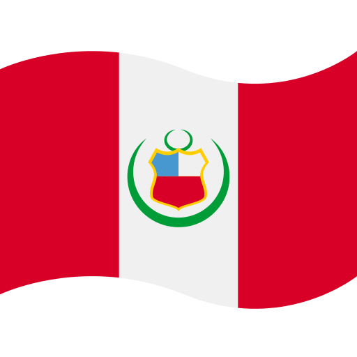
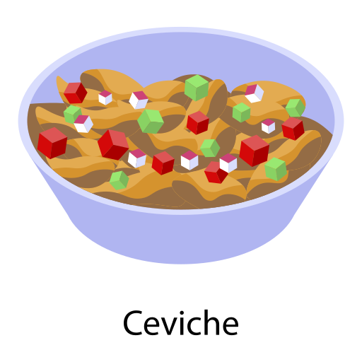
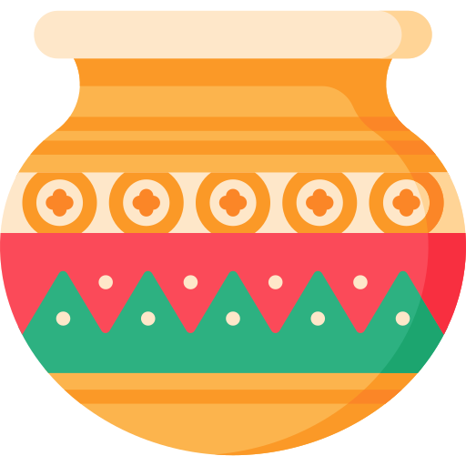
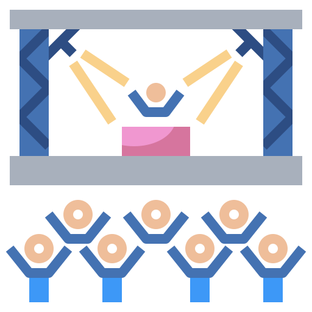

La cultura del Perú
La cultura del Perú es un rico mosaico resultado de la fusión de tradiciones indígenas, españolas y otras influencias culturales. Esta diversidad se manifiesta en diversas áreas, como la gastronomía, las artes, la música, la danza y las celebraciones religiosas, destacando la preservación de elementos precolombinos y la fuerte influencia de la cultura andina.
Culinaria
La cocina peruana es reconocida mundialmente por su diversidad y sabor, con platos como el ceviche, los anticuchos, el lomo saltado y el ají de gallina, resultado de la combinación de ingredientes nativos y técnicas culinarias introducidas por los colonizadores.
Artesanía
La artesanía peruana es conocida por sus piezas coloridas y detalladas, como tejidos, cerámicas, esculturas en madera y objetos de plata, reflejando la rica tradición artística del país.
Música y danza
La música y la danza peruanas son vibrantes y diversas, con ritmos y estilos variados que representan las diferentes regiones y grupos étnicos del país, como la danza de las tijeras, una tradición ancestral, y la música andina.

Festivales
Perú celebra más de 3.000 festivales anuales, que incluyen celebraciones religiosas, como el Inti Raymi (Fiesta del Sol), y fiestas populares con desfiles, música, danzas y manifestaciones culturales.
Religión
El catolicismo es la religión predominante, pero la cultura religiosa peruana también incluye prácticas y creencias de origen indígena, como la veneración de la naturaleza y de los antepasados.
Idioma
El español es el idioma oficial, pero el quechua y el aymara también son reconocidos y hablados por una parte significativa de la población, especialmente en las regiones andinas.

Ropas tradicionales
Las ropas tradicionales peruanas son coloridas y elaboradas, con faldas bordadas, chalecos, capas (llicllas), cintas (chumpis), chaquetas (jobonas) y ponchos, además de sombreros (chullos) hechos con lana de alpaca, llama, vicuña o oveja.